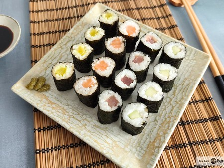
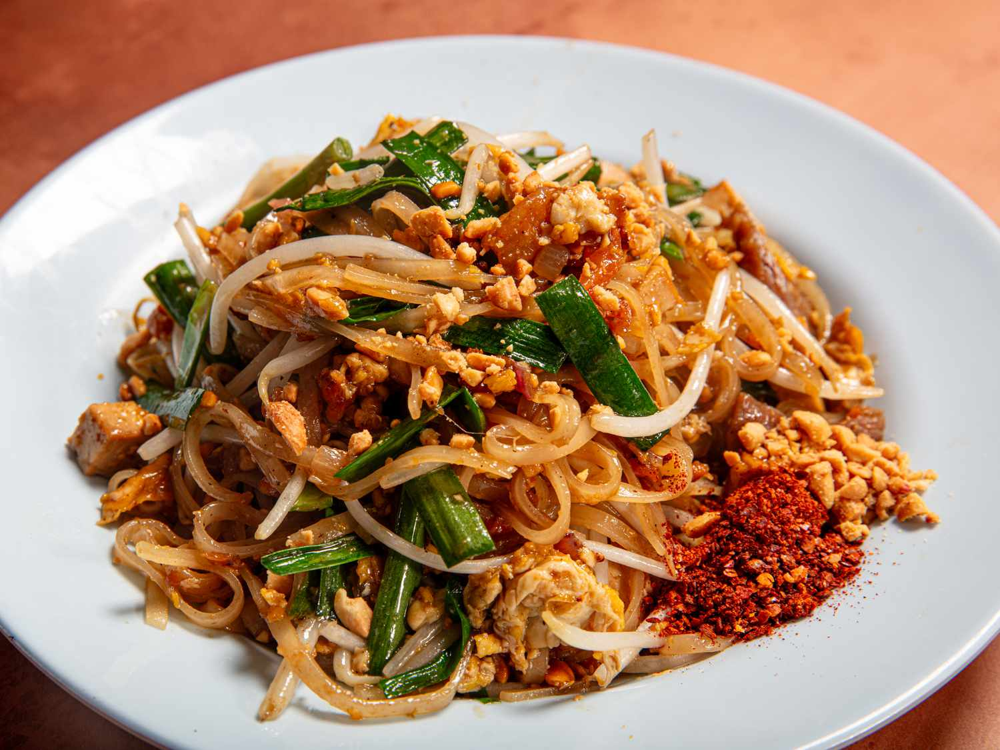
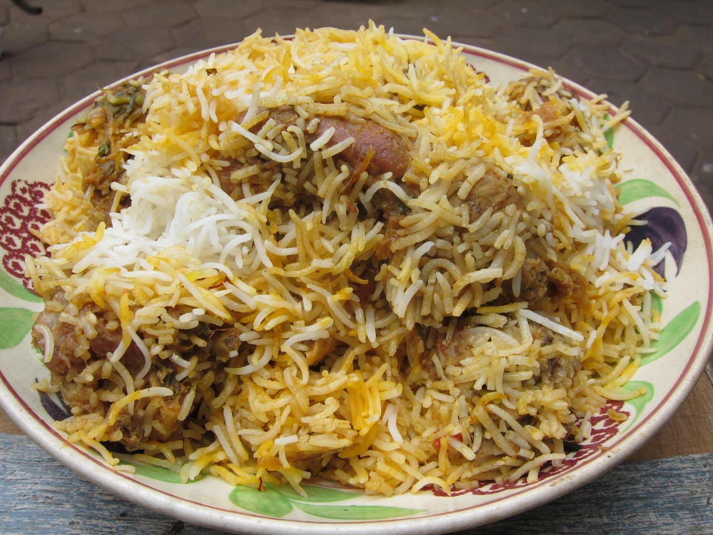

El sushi comenzó como un método de conservación de pescado en arroz fermentado y evolucionó hasta convertirse en el arte culinario que se conoce hoy. Su elemento esencial es el arroz de grano corto sazonado con vinagre, azúcar y sal, que se combina con pescado crudo, mariscos, verduras o huevo. Existen varias formas, como el nigiri (una bola de arroz con una lámina de pescado encima), el maki (enrollado en alga nori) y el temaki (en forma de cono). Se acompaña con salsa de soya, jengibre encurtido y wasabi, y se valora tanto por su sabor como por su presentación cuidadosa.

El pad thai es un platillo de fideos salteados que se popularizó en Tailandia en la década de 1930 y hoy es una de las comidas callejeras más reconocidas del país. Se prepara con fideos de arroz salteados en wok junto con huevo, tofu o camarones, brotes de soya y cebollín. La salsa, hecha con tamarindo, salsa de pescado y azúcar de palma, le da su equilibrio característico entre lo dulce, lo ácido y lo salado. Se termina con cacahuates triturados y un toque de limón, que realzan la textura y el aroma.

El biryani es un platillo festivo de arroz que se cocina en capas y que tiene diferentes versiones según la región, como las de Hyderabad, Lucknow o Calcuta. Se elabora con arroz basmati de grano largo, carne de pollo, cordero o verduras, y una mezcla aromática de especias como cardamomo, clavo, canela y azafrán. La cocción lenta en una olla sellada permite que los sabores se mezclen sin perder la textura individual de cada grano. Suele servirse con raita, una salsa fresca de yogur, para equilibrar la intensidad de las especias.